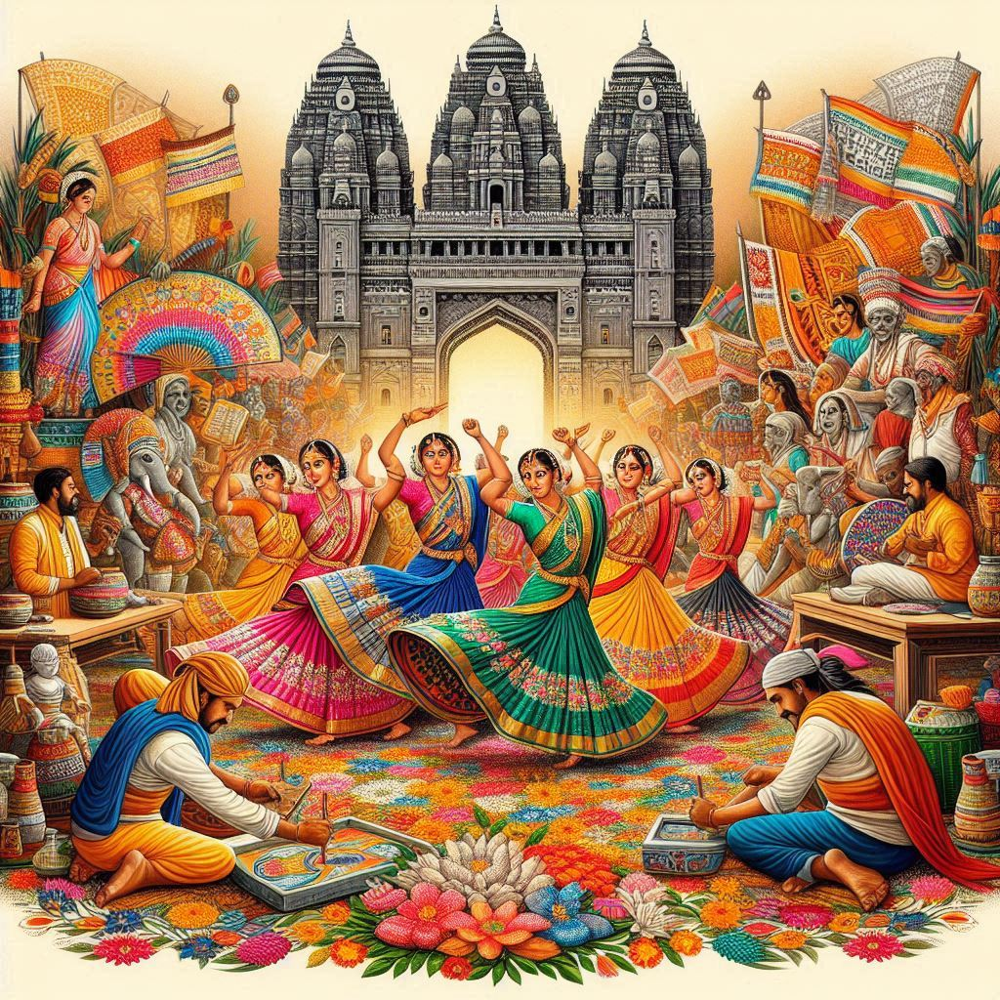
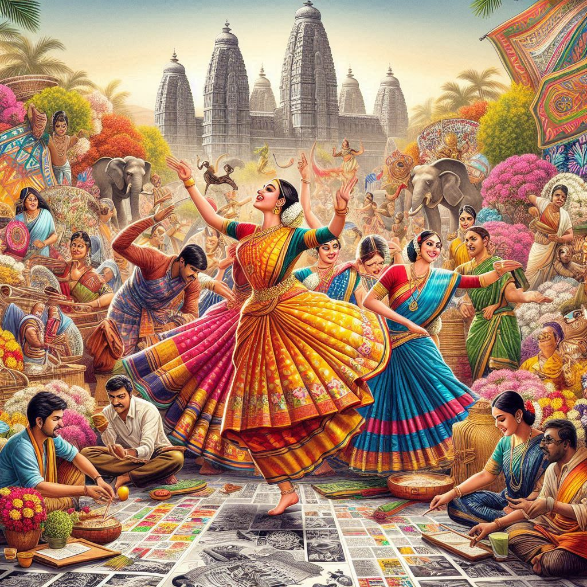

Telangana, located in southern India, has a rich and diverse culture shaped by its history, traditions, and the influences of various dynasties. Here’s an overview of the key aspects of Telangana's culture:
1. Language
- Telugu: The official language of Telangana, Telugu, is an ancient Dravidian language with a rich literary tradition. It is widely spoken and is integral to the state's identity. The state celebrates Telugu Bhasha Dinotsavam (Telugu Language Day) to promote the language and its literature.
2. Festivals
- Bathukamma: A unique floral festival celebrated by women, it involves the creation of a floral arrangement and is marked by singing and dancing. It typically occurs in September or October, coinciding with the Durga Navratri festival.
- Bonalu: Celebrated primarily in Hyderabad and surrounding areas, this festival is dedicated to the goddess Mahakali. It involves offerings of food and traditional dance.
- Sankranti: A major harvest festival celebrated in January, featuring kite flying, feasting, and various cultural events.
- Ugadi: The Telugu New Year, celebrated with traditional foods and rituals, marking the beginning of the new harvest season.
3. Cuisine
- Spicy Flavors: Telangana cuisine is known for its bold and spicy flavors. Staple foods include rice, lentils, and a variety of vegetables.
- Special Dishes:
- Hyderabadi Biryani: A world-famous dish made with marinated meat and fragrant basmati rice, often cooked with saffron and spices.
- Pachi Pulusu: A raw tamarind soup served with rice, typical of the region.
- Sakinalu: A traditional snack made from rice flour, often shaped into spirals and fried.
4. Arts and Crafts
- Handicrafts: Telangana is known for its rich handicrafts, including Pochampally Ikat (a traditional weaving technique), Nirmal paintings, and Banjara embroidery. These crafts reflect the vibrant culture and artistry of the region.
- Dance and Music: Traditional dance forms like Lambadi (performed by the Banjara community) and Kuchipudi (a classical dance form) are important cultural expressions. Folk music, often accompanied by instruments like the dholak and nadaswaram, plays a significant role in local celebrations.


5. Architecture and Heritage
- Temples: Telangana has a wealth of historical temples, such as:
- Ramappa Temple: A UNESCO World Heritage site known for its intricate sculptures and architecture.
- Bhadrachalam Temple: A significant pilgrimage site dedicated to Lord Rama.
- Qutb Shahi Architecture: Hyderabad, the capital, features stunning structures from the Qutb Shahi dynasty, including the Golconda Fort and Charminar.
6. Social Structure
- Joint Family System: Traditional family structures often include extended families living together, emphasizing strong familial bonds and communal living.
- Community Celebrations: Many festivals and cultural events are celebrated collectively, fostering a sense of community and belonging.
7. Education and Literature
- Telangana has a strong tradition of literature, particularly in Telugu. The state has produced many renowned poets, writers, and scholars, contributing to its vibrant literary culture.
8. Modern Influences
- The culture of Telangana: is also influenced by urbanization and modernity, especially in cities like Hyderabad, which blend traditional practices with contemporary lifestyles. The IT boom has brought diverse cultures together, leading to a dynamic and evolving cultural landscape.
Conclusion
The culture of Telangana is a vibrant tapestry of language, festivals, cuisine, arts, and historical heritage. Its unique traditions and rich artistic expressions make it a significant part of India's diverse cultural landscape. Whether through its festivals, culinary delights, or artistic endeavors, Telangana's culture continues to thrive and evolve.